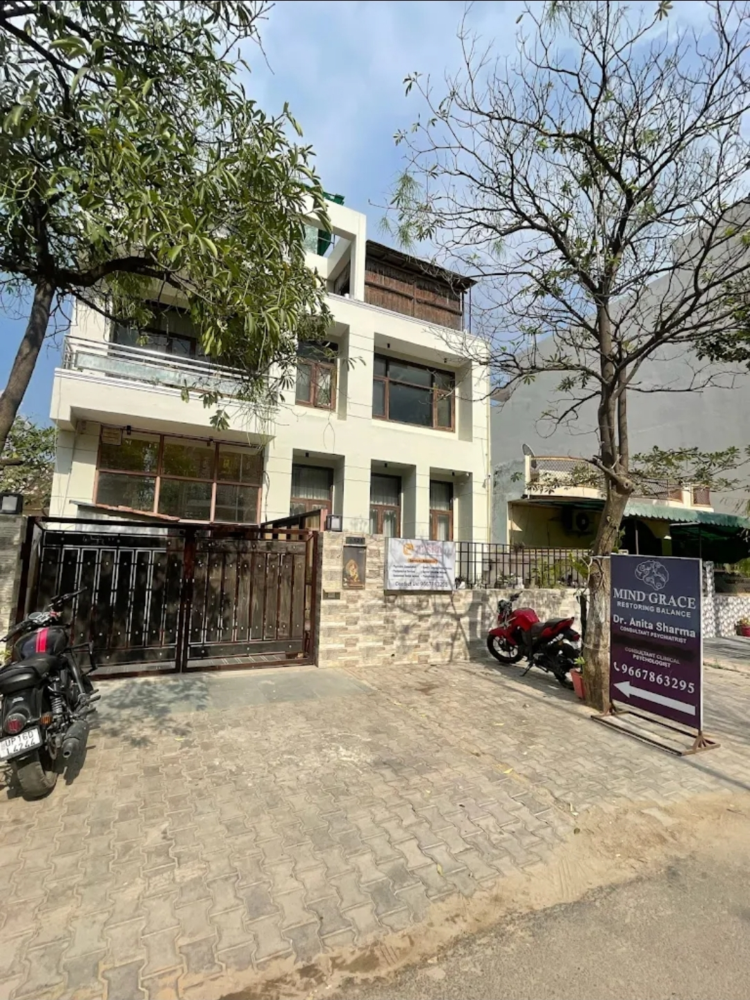

Easy to reach
Mind Grace Neuropsychiatric Clinic location in Greater Noida
The Mind Grace Clinic blending Psychiatry and Psychology, is in Gamma-2, Greater Noida, with practical access from Alpha-1 Metro, Delta-1 Metro, Pari Chowk, Knowledge Park, nearby schools, and university routes.
Map

